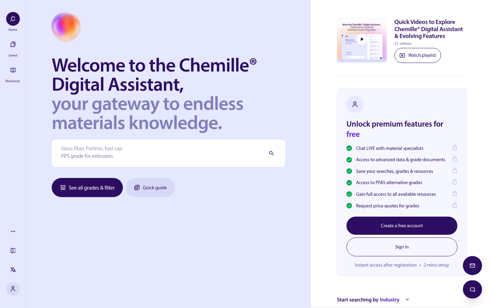
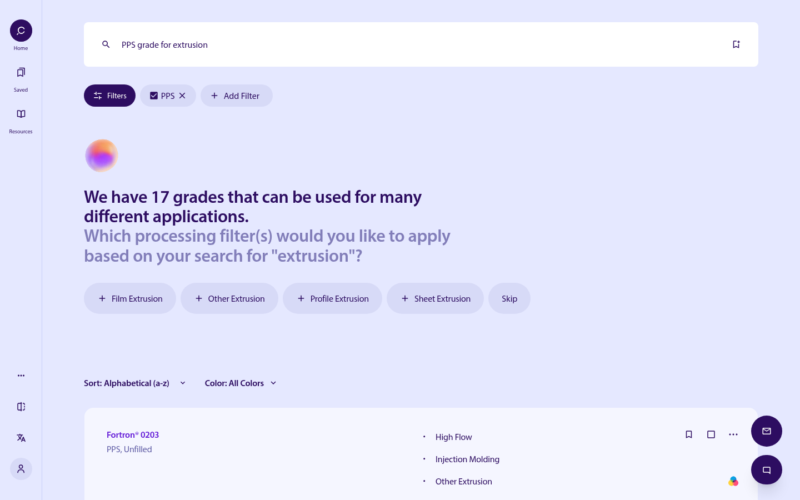
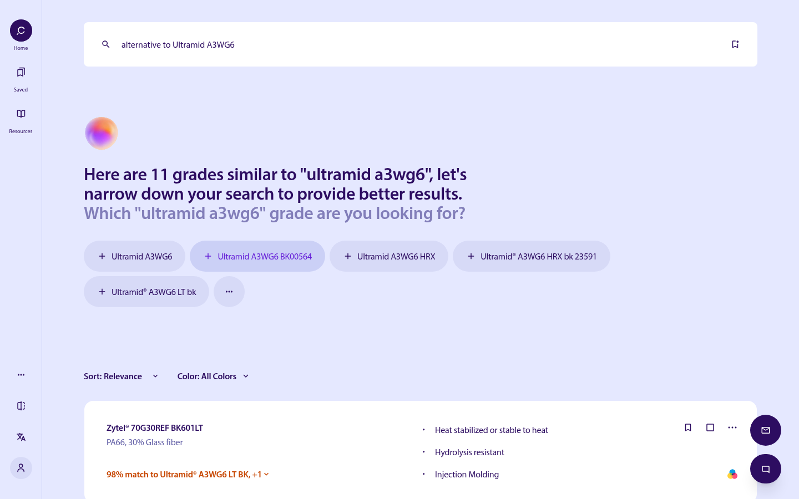
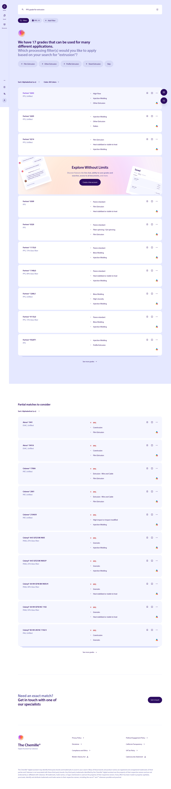
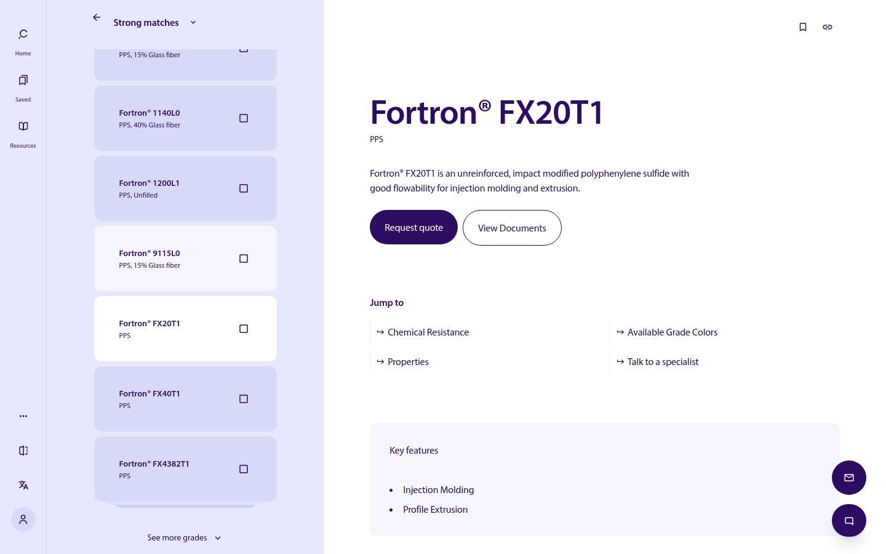
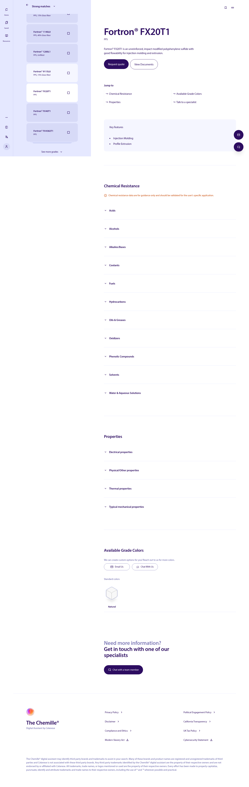
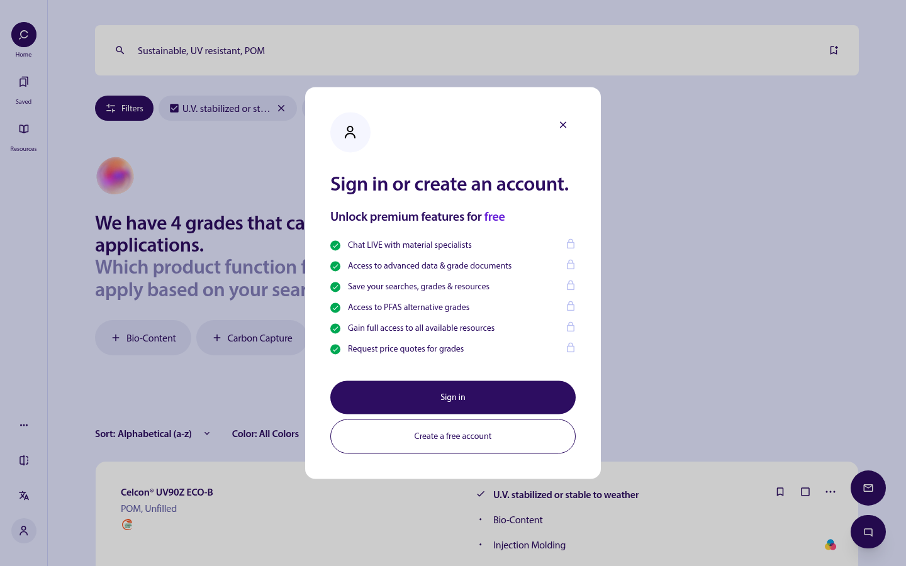

UX research
I reviewed the captured screens against Nielsen's 10, walked both guided flows, and listed the tasks those screens actually offer. I did not run interviews, log reviews, or surveys.
I designed a self-initiated concept for guided grade search on askchemille.com. The flow takes a design engineer from a plain-language need, or a competitor's grade name, to a shortlist of Celanese polymer grades and, when needed, a live expert. The live platform was built by Celanese with Work & Co. This is my independent redesign concept.

I am Suvarna Myneni. I did this as a solo, self-initiated concept redesign and UX audit of guided AI grade search. I did not change the shipped product.
The live platform was built by Celanese with Work & Co. This is my independent redesign concept.
I reviewed the captured screens against Nielsen's 10, walked both guided flows, and listed the tasks those screens actually offer. I did not run interviews, log reviews, or surveys.
I mapped guided search, plus two flows: plain-language search through quote or expert, and competitor-grade replacement that disambiguates the variant before it ranks.
I specified one clarifying question, removable intent chips, an explained percent match, strong versus partial results, and an account gate at the moment of intent.
I recorded the live visual language, including the violet palette, Myriad Pro, pills, chips, and the match label. I did not restyle the shipped product.
I captured desktop screens of home, clarifying results, the full results page, alternatives, grade detail, the full grade page, and the account gate. I did not capture loading, zero-result, signed-in, or mobile states.
This is not a record of the Celanese and Work & Co engagement, and not a launch. I shipped no features from this work, and I have no adoption, lead, or satisfaction numbers.
How I moved from discovery to delivery.
I treated choosing an engineering polymer as a high-stakes call made early in product design. A wrong grade surfaces late, in validation or tooling, when change is expensive.
How might I help a design engineer turn a plain-language need, or a competitor's grade, into a short, trustworthy list of Celanese grades, and know exactly when to bring in a human expert?
Engineers usually start with a loose need ("heat-resistant, glass-filled, for a fuel cap"), a spec number, or a competitor's grade name, not a Celanese trade name. The catalog is deep: the live search lists 2,115 grades and the resource library 448 documents, each grade carrying dense data on chemistry, filler, processing, chemical resistance and certifications. Keyword search and long filter panels push the translation work onto the user.
| Fact | Detail |
|---|---|
| Product | Chemille® Digital Assistant by Celanese, askchemille.com |
| Public launch | Celanese press release |
| Focus of my study | Guided search: query, clarifying question, ranked results with % match, grade detail, quote or expert |
Users arrive from alternatives, application, filters, or a live expert, as the site's FAQ lists them. The front door has to honor all four.
The site labels chemical-resistance data as guidance only, to be validated. A percent match cannot be presented as a specification.
Premium content (documents, quotes, chat) sits behind a free account, so the free path still has to deliver a useful shortlist.
The audience is in two languages, English and 中文, with trademark, GDPR, and cookie-consent requirements that cannot break the flow.
I worked alone. I had no working sessions with Celanese or Work & Co. The last column is how I accounted for each stakeholder.
| Stakeholder | What they need | How I accounted for them |
|---|---|---|
| Celanese Engineered Materials leadership | Winning the material decision early in design | A self-serve tool that shows the whole portfolio, so the best grade is not overlooked |
| Chemille program lead / product owner | Adoption, roadmap, a five-year AI vision | A scalable flow and system that new search types can plug into |
| Material scientists and application engineers | Accurate recommendations; the FAQ notes 30+ experts enhance the model | Transparent matching (what was understood, why it matched) and clear data caveats |
| 24/5 live-chat technical experts | Arriving conversations that already carry context | Chat entry points on every screen, after the user has shared preliminary needs |
| Sales and commercial | Qualified leads and quote requests | Request quote on the grade page; account gate placed at moments of intent |
| Marketing and brand | A recognisable Chemille brand, resource and video content | Consistent visual language; resources and tutorials one click away |
| Legal, compliance, IT security | Trademark use, GDPR, cookie consent, cybersecurity | Disclaimers, consent modal and policy links that do not break the flow |
| Engineering, data and AI team | Intent parsing (the search URL carries entities such as grade, application, brand, polymer, property, filler) | UI patterns that expose parsed entities as editable chips |
| Design and development partner | Launch note credits Work & Co (Accenture Song) with Celanese | I have no relationship with the partner. The live platform was built by Celanese with Work & Co. My concept does not change the shipped product. |
I focused on the industries the site already offers as entry points: Automotive and Transportation, Consumer Goods, Electrical and Electronics, Industrial, and Medical and Pharma.
Need a grade that meets thermal, mechanical and chemical demands for a new part. They often start from an application or a property, not a trade name.
Validate shortlists against specs, OEM approvals, UL listings and chemical-resistance data. They want data sheets and documents they can defend.
Start from a competitor grade name and need a like-for-like Celanese alternative, with the variant made explicit before anything is ranked.
Need quotes, availability and colours once engineering has a shortlist. The path from grade to request-a-quote has to be short.
Look for bio-content, carbon-capture or PFAS-alternative grades. That intent is its own search, not a leftover filter.
This was a short study, so I kept research light. I did not run interviews, log reviews, or surveys.
I used a few methods on the desktop screens in this study, plus a light read of published buying and filter research.
I took facts from each platform's own pages. Positions on the map are my qualitative read of described features, not measured data.
| Platform | Catalog scope | How you search | Alternatives |
|---|---|---|---|
| Chemille® (Celanese) | Celanese Engineered Materials portfolio; 2,115 grades listed in search | Plain-language AI search that asks clarifying questions and turns intent into filter chips | Competitor grade in, Celanese grades out with a % match |
| UL Prospector | 100,000+ resins and plastics from hundreds of suppliers; 45,000+ UL Yellow Cards | Keyword with Boolean operators, 600+ property filters | Alternative resin search (subscription feature) |
| SpecialChem (Omnexus) | Master catalog of 103,341 plastics and elastomers from all suppliers | Filters across up to 12 dimensions, graphical search, autosuggest | Not described on the pages I reviewed |
| MatWeb | Data sheets for 200,000+ metals, plastics, ceramics, composites | Text, category, property and composition criteria (3 registered, 10 premium) | Not described on the pages I reviewed |
| BASF Engineering Plastics Finder | BASF engineering plastics portfolio (described as non-exhaustive) | Parameter-based refinement | Not described on the pages I reviewed |
| Platform | Compare | Human help | Access and cost |
|---|---|---|---|
| Chemille® (Celanese) | Side-by-side compare with downloadable summaries (per tutorial playlist) | 24/5 engineer-to-engineer live chat, email, request a quote | Free; free account unlocks chat, documents, saved searches, PFAS alternatives, quotes |
| UL Prospector | Up to 5 materials side by side, radar plot | Contact suppliers and distributors for pricing | Free account plus paid tiers; Property Search from $49 per user per month (annual) |
| SpecialChem (Omnexus) | Compare grades, graphical comparison | Connect with suppliers, request samples | Free |
| MatWeb | Compare 3 (registered) or 20 (premium) data sheets | Supplier listings on data sheets | Free; Premium $99.95 per year |
| BASF Engineering Plastics Finder | Not described on the pages I reviewed | Directs users to BASF experts | Free |
I wrote four proto-personas for jobs the live site already gives someone a way to start. They are not based on interviews, and they are not a counted sample.
Design Engineer · Tier-1 automotive
I know the heat and the fuel. I do not know the trade name.
Goals
A credible shortlist before the design review.
Frustrations
Unfamiliar trade names, and filter panels that return hundreds of grades.
Materials Engineer · Medical devices
If I cannot defend the data, I cannot take the grade into validation.
Goals
Evidence to defend: data, documents, and approvals.
Frustrations
Black-box recommendations, and data scattered across PDFs.
Sourcing Specialist · Electrical and electronics
I need a drop-in grade and a quote, not another email thread.
Goals
A drop-in alternative and a quote, quickly.
Frustrations
Cross-referencing grades by hand, and waiting on email replies.
Sustainability Engineer · Consumer goods
I have to drop PFAS and still hit the thermal and flame numbers.
Goals
A shortlist of PFAS-alternative or bio-content grades that still meet the part.
Frustrations
Sustainability filters that sit apart from the performance data.
I made these concept decisions for the guided flows and mapped them to the proto-personas. Where the live site already works this way, I kept it. I did not ship any of this.
Why. Priya does not know trade names and faces a blank page. Example prompts such as "PPS grade for extrusion" show the kind of query that works.
Trade-off. Filter-first people still need "See all grades & filter" beside the field. The search stays the front door; browse stays one click away.
Why. A vague query returns too many grades. The first results screen asks one processing question as chips ("Which processing filter(s)… for 'extrusion'?"), not the full filter set.
Trade-off. Do not force the question. The capture still shows 17 grades before a chip is chosen, so Skip has to remain a real choice rather than a dead end.
Why. Marcus will not trust a black box. Parsed intent becomes removable chips (PPS ×, Profile Extrusion ×) so a wrong reading can be corrected.
Trade-off. More chrome on the results bar, in exchange for a recommendation the user can edit.
Why. A conversational count ("We have 17 grades…") and a live "View grades • 2115" in the filter modal stop dead ends and zero-result searches.
Trade-off. A headline count can sound more certain than the match quality. Strong matches and partial matches stay split so the count is not the only signal.
Why. Lin starts from a competitor grade. The assistant asks which Ultramid variant, then ranks Celanese grades by percent match.
Trade-off. The collapsed card shows "98% match to Ultramid® A3WG6 LT BK, +1" without the properties. The concept keeps the orange label and asks it to name the basis. A percent is not a specification.
Why. Marcus fears missing a better grade, and a weak list needs a next step. Strong matches come first, then "Partial matches to consider", then "Need an exact match? Get in touch".
Trade-off. A longer results page. The expert prompt stays so a thin list is not a dead end.
Why. Marcus needs precise, multi-criteria filtering, and Amina starts from Sustainable options and PFAS alternatives. The modal has nine facet groups, including Sustainable options, PFAS alternatives, Chemical resistance, and Specifications.
Trade-off. Explorers stay on one clarifying question. The batch modal, with a live grade count, is reserved for people who already know their criteria.
Why. Marcus and Lin need a quote, documents, or a specialist without scrolling the whole evidence page. Summary, Request quote, View Documents, and jump-to anchors come first.
Trade-off. Chemical resistance, properties, and colours still follow, with the guidance-only caveat kept on chemical resistance.
Why. Priya should not bounce between the list and the detail. A strong-match rail stays on the left of the grade page.
Trade-off. A narrower detail column on desktop, so switching grades does not lose the query context.
Why. Search and browse stay free. A free account unlocks chat, documents, saved searches, PFAS alternatives and quotes. The gate opens over results the person was already viewing.
Trade-off. Lead capture waits until quote, documents, or another locked action. Arrival is not blocked. The home account card stays a pitch, not a wall.
Why. Marcus hits edge cases the model should not answer. 24/5 experts stay one click away, and the hand-off can carry the search context.
Trade-off. Always-on contact sits beside self-serve. I kept both, so a self-serve path still has an expert when the model should not answer.
Why. New users who are not sure how to begin get "Start searching by Industry": Automotive and Transportation, Consumer Goods, Electrical and Electronics, Industrial, Medical and Pharma.
Trade-off. A second entry beside the field. The plain-language search remains the primary door.


I annotated desktop screens of the live site. They are my reference for the concept. I did not ship these screens. Select an image to open the file at full size.




I can point to a few public facts about the product. What I delivered is the concept on this page. I did not ship features, and I have no adoption, lead, or satisfaction numbers.
Chemille is live in English and Chinese. The product lists 2,115 grades, 448 resources, and 31 tutorial videos, and it includes search types such as OEM specification, regulatory and certification, and PFAS-alternative discovery. I delivered the concept on this page.
| Deliverable | What I specified |
|---|---|
| Information architecture and two flows | A sitemap, a plain-language path from query to quote or expert, and a competitor-grade path that disambiguates the variant before it ranks. |
| Explained match | Addresses the heuristic gap on the alternatives card: "98% match to Ultramid® A3WG6 LT BK, +1" is visible, and the properties behind the percent are not. The concept keeps the orange label and asks it to name the basis of the score. |
| One optional clarifying question | Keeps the single processing question and Skip. The captured screen still shows 17 grades before a chip is chosen, so Skip must remain a real choice rather than a dead end. |
| Action before the long page | The full grade capture continues through chemical resistance, properties, and colours. The concept keeps Request quote, View Documents, and the jump links above that evidence, and keeps the guidance-only caveat. |
| Gate at the moment of intent | Home can be used without an account. The gate in the capture opens over results and lists six locked benefits. The concept keeps that placement. |
| Validate next | I would run a moderated task test of the two flows with design engineers, plus a check of whether an explained match is trusted more than the bare percent. I have not run that test. The targets in Metrics are the success criteria I would use. |
These are targets I would use in a future test of the concept. I have not measured them. There is no baseline and no result.
| KPI | Definition | Target | Measurement method |
|---|---|---|---|
| Time to first relevant grade | Median time from the first query to the first grade opened, on the plain-language task | Target: under 3 minutes | Timed moderated task. I have not measured this. |
| Search success rate | Share of task attempts that open a grade detail page from search | Target: at least 70% of attempts | Task completion in a moderated test. I have not measured this. |
| Clarifying-question skip rate | Share of guided prompts skipped rather than answered | Target: under 40% skipped | Count of Skip against answer-chip selections. I have not instrumented this. |
| Quote or expert-contact conversion | Grade detail views that start a quote request or an expert contact (email or chat) | Target: at least 10% of grade detail views | Clicks on Request quote, Email, and Chat from the grade page. I have not measured this. |
| SUS score | System Usability Scale after both flows, scored from 0 to 100 | Target: 75 or higher | Post-task SUS questionnaire. I have not administered this. |